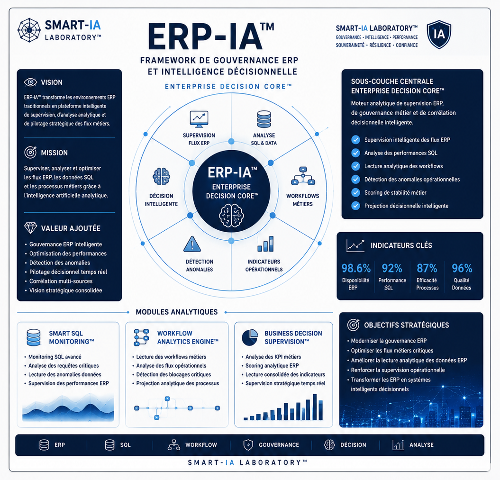

ERP FLOW MONITORING™
Module dédié à la supervision des flux métiers, des transactions ERP et des échanges entre services.
- Suivi des workflows
- Contrôle de cohérence SQL
- Détection de ruptures de flux
- Analyse des lenteurs applicatives
Advanced Strategic Artificial Intelligence Research
___
Une architecture de frameworks IA conçue pour transformer
les données complexes en décisions exploitables.
ERP-IA™ transforme l’ERP traditionnel en cockpit décisionnel augmenté. Il ne se limite plus à stocker, traiter ou restituer des données : il devient un système intelligent de supervision, de corrélation et d’aide à la décision.
En combinant bases SQL, workflows métiers, indicateurs financiers, supervision cloud, automatisation documentaire et intelligence artificielle analytique, ERP-IA™ permet de mieux comprendre les flux internes de l’entreprise.
Une synthèse visuelle du framework ERP-IA™, de sa sous-couche Enterprise Decision Core™, de ses modules analytiques et de ses objectifs stratégiques.

ENTERPRISE DECISION CORE™ constitue la sous-couche analytique principale du framework ERP-IA™. Elle collecte, corrèle et interprète les signaux issus des processus ERP afin de produire une lecture opérationnelle exploitable.
Module dédié à la supervision des flux métiers, des transactions ERP et des échanges entre services.
Module d’analyse prédictive permettant d’anticiper les risques, incohérences et signaux faibles dans les processus d’entreprise.
Enterprise Decision Core™
Supervision • Gouvernance • Data • ERP • Décision • Performance